전기기능사 (2010-03-28 기출문제)
1과목: 전기 이론
1. 5마력을 와트[W] 단위로 환산하면?
- 4300[W]
- 3730[W]
- 1317[W]
- 17[W]
(정답률: 73%)

2. 주로 정전압 다이오드로 사용되는 것은?
- 터널 다이오드
- 제너 다이오드
- 쇼트키베리어 다이오드
- 바렉터 다이오드
(정답률: 91%)
3. 어떤 전지에서 5A의 전류가 10분간 흘렀다면 이 전지에서 나온 전기량은?
- 0.83[C]
- 50[C]
- 250[C]
- 3000[C]
(정답률: 79%)
4. 10Ω의 저항 회로에 E = 100 sin(377t + π/3)[V]의 전압을 가하였을 때 t = 0에서의 순시전류는?
- 5[A]
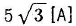
- 10[A]
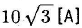
(정답률: 54%)
5. △ 결선의 전원에서 선전류가 40A이고 선간전압이 220V일때의 상전류는?
- 13[A]
- 23[A]
- 69[A]
- 120[A]
(정답률: 48%)
6. 기전력 50V, 내부저항 5Ω인 전원이 있다. 이 전원에 부하를 연결하여 얻을 수 있는 최대전력은?
- 125[W]
- 250[W]
- 500[W]
- 1000[W]
(정답률: 33%)
7. 전력량의 단위는?
- [C]
- [W]
- [Wㆍs]
- [Ah]
(정답률: 55%)
8. 1[Ωㆍm]는?
- 103[Ωㆍ㎝]
- 106[Ωㆍ㎝]
- 103[Ωㆍmm2/m]
- 106[Ωㆍmm2/m]
(정답률: 60%)
9. 납축전지의 전해액은?
- 염화암모늄 용액
- 묽은 황산
- 수산화칼륨
- 염화나트륨
(정답률: 82%)
10. 종류가 다른 두 금속을 접합하여 폐회로를 만들고 두 접합점의 온도를 다르게 하면 이 폐회로에 기전력이 발생하여 전류가 흐르게 되는 현상을 지칭하는 것은?
- 줄의 법칙(Joule's law)
- 톰슨 효과(Thomson effect)
- 펠티어 효과(Peltier effect)
- 제벡 효과(Seebeck effect)
(정답률: 66%)
11. Z = 2 + j11[Ω], Z =4 - j3[Ω]의 직렬회로에 교류전압 100V를 가할 때 합성 인피던스는?
- 6[Ω]
- 8[Ω]
- 10[Ω]
- 14[Ω]
(정답률: 62%)
12. 비투자율이 1인 환상 철심 중의 자장의 세기가 H[AT/m]이었다. 이 때 비투자율이 10인 물질로 바꾸면 철심의 자속밀도[Wb/㎡]는?
- 1/10로 줄어든다.
- 10배 커진다.
- 50배 커진다.
- 100배 커진다.
(정답률: 56%)
13. 선택지락계전기(selective ground relay)의 용도는?
- 다회선에서 지락고장 회선의 선택
- 단일회선에서 지락전류의 방향의 선택
- 단일회선에서 지락사고 지속시간의 선택
- 단익회선에서 지락전류의 대소의 선택
(정답률: 8%)
14. 다음 중 반자성체는?
- 안티몬
- 알루미늄
- 코발드
- 니켈
(정답률: 62%)
15. R = 4Ω, XL = 8Ω, Xc=5Ω가 직렬로 연결된 회로에 100V의 교류를 가했을 때 흐르는 (ㄱ)전류와 (ㄴ)임피던스는?
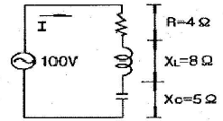
- (ㄱ) 5.9[A], (ㄴ) 용량성
- (ㄱ) 5.9[A], (ㄴ) 유도성
- (ㄱ) 20[A], (ㄴ) 용량성
- (ㄱ) 20[A], (ㄴ) 유도성
(정답률: 48%)
16. 정전 흡인력에 대한 설명 중 옳은 것은?(문제 오류로 가답안 발표시 4번으로 발표가 되었지만 확정답안 발표시 1번으로 정정 발표되었습니다. 여기서는 1번을 누르면 정답 처리 됩니다.)
- 정전 흡인력은 전압의 제곱에 비례한다.
- 정전 흡인력은 극판 간격에 비례한다.
- 정전 흡인력은 극판 면적의 제곱에 비례한다.
- 정전 흡인력은 쿨롱의 법칙으로 직접 계산한다.
(정답률: 81%)
17. 세변의 저항 Ra = Rb = Rc = 15Ω인 Y결선 회로가 있다. 이것과 등가인 △ 결선 회로의 각 변의 저항은?
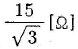
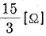
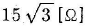
- 45[Ω]
(정답률: 52%)
18. 플레밍의 왼손법칙에서 전류의 방향을 나타내는 손가락은?
- 약지
- 중지
- 검지
- 엄지
(정답률: 80%)
19. 비유전율 2.5의 유전체 내부의 전속밀도가 2 × 10-6[C/m2]되는 점의 전기장의 세기는?
- 18 × 104[V/m]
- 9 × 104[V/m]
- 6 × 104[V/m]
- 3.6 × 104[V/m]
(정답률: 49%)
20. 자체 인덕턴스 20mH의 코일에 30A의 전류를 흘릴 때 저축되는 에너지는?
- 15[J]
- 3[J]
- 9[J]
- 18[J]
(정답률: 54%)
2과목: 전기 기기
21. 2kV의 전압으로 충전하여 2J의 에너지를 축적하는 콘덴서의 정전용량은?
- 0.5[㎌]
- 1[㎌]
- 2[㎌]
- 4[㎌]
(정답률: 54%)
22. 단상 유도 전동기의 기동 방법 중 기동 토크가 가장 큰 것은?
- 분상 기동형
- 반발 유도형
- 콘덴서 기동형
- 반발 기동형
(정답률: 72%)
23. 동기 전동기의 용도에 적합하지 않은 것은?
- 송풍기
- 압축기
- 크레인
- 분쇄기
(정답률: 65%)
24. 교류 전동기를 직류 전동기처럼 속도 제어하려면 가변 주파수의 전원이 필요하다. 주파수 f1에서 직류로 변환하지 않고 바로 주파수 f2로 변환하는 변환기는?
- 사이클로 컨버터
- 주파수원 인버터
- 전압ㆍ전류원 인버터
- 사이리스터 컨버터
(정답률: 49%)
25. 분권전동기에 대한 설명으로 옳지 않은 것은?
- 토크는 전기자 전류의 자승에 비례한다.
- 부하전류에 따른 속도 변화가 거의 없다.
- 계자회로에 퓨즈를 넣어서는 안 된다.
- 계자권선과 전기자권선이 전원에 병렬로 접속되어 있다.
(정답률: 40%)
26. 절연물을 전극사이에 삽입하고 전압을 가하면 전류가 흐르는데 이 전류는?
- 과전류
- 접촉전류
- 단락전류
- 누설전류
(정답률: 61%)
27. 상전압 300V의 3상 반파정류 회로의 직류전압은 약 몇 [V]인가?(오류 신고가 접수된 문제입니다. 반드시 정답과 해설을 확인하시기 바랍니다.)
- 520[V]
- 350[V]
- 260[V]
- 50[V]
(정답률: 57%)
28. 단상 유도전압조정기의 단락권선의 역할은?
- 절연 보호
- 철손 경감
- 전압강하 경감
- 전압조정 수월
(정답률: 41%)
29. 교류회로에서 양방향 점호(ON) 및 소호(OFF)를 이용하며, 위상제어를 할 수 있는 소자는?
- TRIAC
- SCR
- GTO
- IGBT
(정답률: 46%)
30. 3상 유도전동기의 원선도를 그리려면 등가회로의 정수를 구할 때 몇 가지 시험이 필요하다. 이에 해당하지 않는 것은?
- 무부하시험
- 고정자 권선의 저항측정
- 회전수 측정
- 구속시험
(정답률: 45%)
31. 220V/60Hz, 4극 3상 유도전동기가 있다. 슬립 5%로 회전할 때 출력 17kW를 낸다면, 이 때의 토크는 약 [Nㆍm]인가?
- 56.2[Nㆍm]
- 95.5[Nㆍm]
- 191[Nㆍm]
- 935.8[Nㆍm]
(정답률: 47%)
32. 전기기계의 철심을 성층하는 가장 적절한 이유는?
- 기계손을 적게 하기 위하여
- 표유 부하손을 적게 하기 위하여
- 히스테리시스손을 적게 하기 위하여
- 와류손을 적게 하기 위하여
(정답률: 52%)
33. 2극 3600rpm인 동기발전기와 병렬 운전하려는 12극 발전기의 회전수는?
- 600[rpm]
- 3600[rpm]
- 7200[rpm]
- 21600[rpm]
(정답률: 63%)
34. 철심이 포화할 때 동기 발전기의 동기 임피던스는?
- 증가한다.
- 감소한다.
- 일정하다.
- 주기적으로 변한다.
(정답률: 47%)
35. 전기기계의 효율 중 발전기의 규약 효율 nG는?(단 입력 P, 출력 Q, 손실 L로 표현한다.)
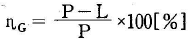
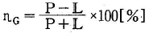
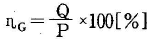
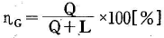
(정답률: 66%)
36. 기동전동기로서 유도전동기를 사용하려고 한다. 동기전동기의 극수가 10극인 경우 유도전동기의 극수는?
- 8극
- 10극
- 12극
- 14극
(정답률: 55%)
37. 직류 분권전동기의 계자 저항을 운전중에 증가시키면 회전속도는?
- 증가한다.
- 감소한다.
- 변화없다
- 정지한다.
(정답률: 55%)
38. 정격전압 220V의 동기발전기를 무부하로 운전하였을때의 단자전압이 253V이었다. 이 발전기의 전압변동률은?
- 13[%]
- 15[%]
- 20[%]
- 33[%]
(정답률: 58%)
39. 고장에 의하여 생긴 불평형의 전류차가 평형 전류의 어떤 비율 이상으로 되었을 때 동작하는 것으로, 변압기 내부 고장의 보호용으로 사용되는 계전기는?
- 과전류계전기
- 방향계전기
- 비율차동계전기
- 역상계전기
(정답률: 97%)
40. 그림과 같은 기호가 나타내는 소자는?
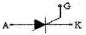
- SCR
- TRIAC
- IGBT
- Diode
(정답률: 62%)
3과목: 전기 설비
41. 제3종 접지공사의 접지 저항은?(관련 규정 개정전 문제로 여기서는 기존 정답인 2번을 누르면 정답 처리됩니다. 자세한 내용은 해설을 참고하세요.)
- 10[Ω] 이하
- 100[Ω] 이하
- 10[MΩ] 이하
- 100[MΩ] 이하
(정답률: 98%)
42. 가로등, 경기장, 공장, 아파트 단지 등의 일반조명을 위하여 시설하는 고압방전등의 효율은 몇 [ℓm/W] 이상의 것이어야 하는가?
- 3[ℓm/W]
- 5[ℓm/W]
- 70[ℓm/W]
- 120[ℓm/W]
(정답률: 65%)
43. 옥내에 시설하는 사용전압이 400V 이상인 저압의 이동 전선은 0.6/1kV EP 고무 절연 그로로프렌 캡타이어 케이블로서 단면적이 몇 [mm2] 이상 이어야 하는가?
- 0.75[mm2]
- 2[mm2]
- 5.5[mm2]
- 8[mm2]
(정답률: 58%)
44. 무대ㆍ무대마루 및 오케스트라박스ㆍ영사실 기타 사람이나 무대 도구가 접촉할 우려가 있는 곳에 시설하는 저압 옥내배선ㆍ전구선 또는 이동전선은 사용 전압이 몇 [V] 미만 이어야 하는가?
- 100[V]
- 200[V]
- 300[V]
- 400[V]
(정답률: 74%)
45. 일반적으로 저압 가공 인입선이 도로를 횡단하는 경우 노면상 설치 높이는 몇 [m]이상 이어야 하는가?
- 3[m]
- 4[m]
- 5[m]
- 6.5[m]
(정답률: 66%)
46. 합성수지관이 금속관과 비교하여 장점으로 볼 수 없는 것은?
- 누전의 우려가 없다.
- 온도 변화에 따른 신축 작용이 크다
- 내식성이 있어 부식성 가스 등을 사용하는 사업장에 적당하다.
- 관 자체를 접지할 필요가 없고, 무게가 가벼우며 시공하기 쉽다.
(정답률: 50%)
47. 철근콘크리트주가 원형의 것인 경우 갑종 풍압하중 [Pa]은?(단, 수직 투명면적 1m2에 대한 풍압 임)
- 588[Pa]
- 882[Pa]
- 1039[Pa]
- 1412[Pa]
(정답률: 41%)
48. 단선의 브리타니아(britania) 직선 접속시 전선 피복을 벗기는 길이는 전선 지름의 약 몇 배로 하는가?
- 5배
- 10배
- 20배
- 30배
(정답률: 42%)
49. 폭발성 분진이 있는 위험장소에 금속관 배선에 의할 경우 관 상호 및 관과 박스 기타의 부속품이나 풀박스또는 전신기계기구는 몇 턱 이상의 나사 조임으로 접속하여야 하는가?
- 2턱
- 3턱
- 4턱
- 5턱
(정답률: 75%)
50. 금속 덕트에 넣은 전선의 단면적(절연피복의 단면적 포함)의 합계는 덕트 내부 단면적의 몇 [%]이하로 하여야 하는가?(단, 전광표시장시ㆍ출퇴표시등 기타 이와 유사한 장치 또는 제어회로 등의 배선만을 넣는 경우가 아니다.)
- 20[%]
- 40[%]
- 60[%]
- 80[%]
(정답률: 56%)
51. 가연성 가스가 새거나 체류하여 전기설비가 발화원이 되어 폭발할 우려가 있는 곳에 있는 저압 옥내전기설비의 시설 방법으로 가장 적합한 것은?
- 애자사용 공사
- 가요전선관 공사
- 셀룰러 덕트 공사
- 금속관 공사
(정답률: 75%)
52. 동력 배선에서 경보를 표시하는 램프의 일반적인 색깔은?
- 백색
- 오렌지색
- 적색
- 녹색
(정답률: 50%)
53. 다음 중 교류 차단기의 단선도 심벌은?
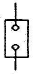
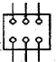
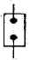
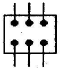
(정답률: 46%)
54. 애자사용 공사에 의한 저압 옥내배선에서 일반적으로 전선 상호간의 간격은 몇 [㎝]이상 이어야 하는가?
- 2.5[㎝]
- 6[㎝]
- 25[㎝]
- 60[㎝]
(정답률: 53%)
55. 16[㎜] 금속 전선관의 나사 내기를 할 때 반직각 구부리기를 한 곳의 나사산은 몇 산 정도로 하는가?
- 3~4산
- 5~6산
- 8~10산
- 11~12산
(정답률: 37%)
56. 가정용 전등에 사용되는 점멸스위치를 설치하여야 할 위치에 대한 설명으로 가장 적당한 것은?
- 접지측 전선에 설치한다.
- 중성전에 설치한다.
- 부하의 2차측에 설치한다.
- 전압측 전선에 설치한다.
(정답률: 44%)
57. 수전 전력 500kW 이상인 고압 수전 설비의 인입구에 낙뢰나 혼촉 사고에 의한 이상전압으로부터 선로의 기기를 보호할 목적으로 시설하는 것은?
- 단뢰기(DS)
- 배선용 차단기(MCCB)
- 피뢰기(LA)
- 누전 차단기(ELB)
(정답률: 64%)
58. 박스에 금속관을 고정할 때 사용하는 것은?
- 유니언 커플링
- 로크너트
- 부싱
- C형 엘보
(정답률: 58%)
59. 주상 변압기의 1차측 보호 장치로 사용하는 것은?
- 컷아웃 스위치
- 유입개폐기
- 캐치홀더
- 리클로저
(정답률: 71%)
60. 금속제 가요전선관 공사 방법의 설명으로 옳은 것은?
- 가요전선관 박스와 직각부분에 연결하는 부속품은 앵글박스 커넥터이다.
- 가요전선관과 금속관과의 접속에 사용하는 부속품은 스트레이트박스 커넥터이다.
- 가요전선관 상호접속에 사용하는 부속품은 콤비네이션 커플링이다.
- 스위치박스에는 콤비네이션 커플링을 사용하여 가요전선관과 접속한다.
(정답률: 45%)